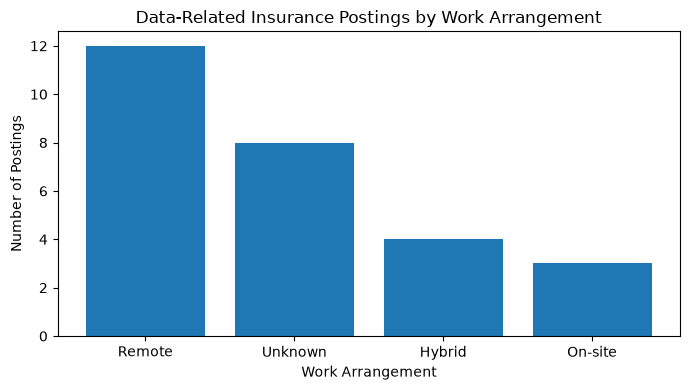

AD688 Group 3 - Step 2 Filtering: Insurance Carriers, All Roles (PySpark on AWS EC2)
Track: Team project, Step 2 (Data Preparation and Market Baseline).
Engine: PySpark, running on the AWS EC2 instance (the class-proper toolchain).
Goal: filter the job postings down to the Insurance Carriers industry (NAICS 5241),keeping every role, not just data roles, and flag which postings match our data-role scope.
This is the team’s master dataset going forward. Everything is included, and IS_DATA_ROLE_MATCH column marks the ones relevant to the data-role analysis, so the team can sort/filter to that subset in Excel or widen the view as needed.
Run the cells top to bottom. Each one prints its output right below it.
1. Start Spark and load the data
Spark is the query engine. We point it at the 17 Parquet files and load them as one table.
from pathlib import Pathfrom pyspark.sql import SparkSession# Start or reuse the Spark sessionspark = ( SparkSession.builder .appName("AD688-Step2-Insurance") .master("local[1]") .config("spark.driver.memory", "512m") .getOrCreate())spark.sparkContext.setLogLevel("ERROR")# Find the project rootproject_root = Path.cwd()whilenot (project_root /"_quarto.yml").exists():if project_root.parent == project_root:raiseFileNotFoundError("Could not find the project root.") project_root = project_root.parent# Shared team datasetcsv_path = ( project_root/"outputs"/"step2"/"insurance_5241_all_postings.csv")print("Dataset path:", csv_path)ifnot csv_path.exists():raiseFileNotFoundError(f"Dataset not found: {csv_path}")# Load the shared Insurance 5241 datasetdf = ( spark.read .option("header", True) .option("inferSchema", True) .option("quote", '"') .option("escape", '"') .csv(str(csv_path)))# Make the DataFrame available for Spark SQLdf.createOrReplaceTempView("jobs")print("Dataset loaded successfully")print("Rows:", df.count())print("Columns:", len(df.columns))print("SQL table 'jobs' is ready.")
This lets us query the postings with plain SQL and name the table jobs.
# Register the DataFrame as a temporary SQL table named "jobs" so the next cell can# query it with plain SQL (SELECT / WHERE) instead of PySpark method chains.df.createOrReplaceTempView("jobs")print("Table 'jobs' is ready to query.")
Table 'jobs' is ready to query.
3. Filter to Insurance Carriers (NAICS 5241), flagged for data-role titles
Keep every posting in the Insurance Carriers industry (NAICS code 5241), regardless of job title - nothing gets dropped, this is still the full industry cross-section.
The one addition is a new column, IS_DATA_ROLE_MATCH, placed right after TITLE_CLEAN: it’s 1 for postings whose title matches our data-role keyword set (data engineer, data scientist, data analyst / BI, data architect / DBA, data governance, ML engineer, etc), and 0 for everything else.
Sorting or filtering on this column in Excel is how the team can hone in on data roles specifically, without losing the rest of the dataset to work from.
# This is still the full Insurance Carrier (NAICS 5241) slice - every role, nothing# filtered out. The only addition is IS_DATA_ROLE_MATCH, a 1/0 flag placed right after# TITLE_CLEAN, using our data-role keyword regex. Rows flagged 1 are the data-role subset.query ="""SELECT -- Core identifiers and posting metadata ID, POSTED, EXPIRED, DURATION, URL, -- Job title fields (raw text plus Lightcast's cleaned versions) TITLE_RAW, TITLE_NAME, TITLE_CLEAN, -- Flag: 1 if this title matches the data-role keyword set, 0 otherwise. Does not -- drop any rows - just marks which ones are in the data-role scope. CASE WHEN lower(TITLE_RAW) RLIKE 'data engineer|analytics engineer|etl|data pipeline|data platform|big data|ml engineer|machine learning engineer|data architect|database|data scientist|data science|data analyst|business intelligence| bi |data governance|data management' THEN 1 ELSE 0 END AS IS_DATA_ROLE_MATCH, -- Employer info COMPANY_NAME, COMPANY_IS_STAFFING, EMPLOYMENT_TYPE_NAME, -- Experience and education requirements MIN_YEARS_EXPERIENCE, MAX_YEARS_EXPERIENCE, IS_INTERNSHIP, MIN_EDULEVELS_NAME, MAX_EDULEVELS_NAME, -- Pay SALARY, SALARY_FROM, SALARY_TO, ORIGINAL_PAY_PERIOD, -- Location and remote status REMOTE_TYPE_NAME, LOCATION, CITY_NAME, STATE_NAME, MSA_NAME, -- Industry and occupation codes NAICS_2022_4, SOC_2021_4_NAME, ONET_NAME, -- Skills and certifications requested in the posting SKILLS_NAME, SPECIALIZED_SKILLS_NAME, COMMON_SKILLS_NAME, SOFTWARE_SKILLS_NAME, CERTIFICATIONS_NAMEFROM jobsWHERE NAICS_2022_4 = '5241'ORDER BY TITLE_NAME, TITLE_RAW"""insurance = spark.sql(query)insurance.createOrReplaceTempView("insurance_jobs")print("Insurance Carrier (NAICS 5241) postings:", insurance.count())print("Rows flagged IS_DATA_ROLE_MATCH = 1:", insurance.filter("IS_DATA_ROLE_MATCH = 1").count())
A preview of the postings, and the most common job titles in this slice so the team can get a feel for what’s in here before deciding how to narrow it down.
# Preview the postings, including the new flag, and the most common job titles.insurance.select("TITLE_RAW", "TITLE_NAME", "IS_DATA_ROLE_MATCH", "COMPANY_NAME","STATE_NAME", "REMOTE_TYPE_NAME", "SALARY_FROM").show(30, truncate=False)print("Most common job titles (TITLE_NAME), top 25:")insurance.groupBy("TITLE_NAME").count().orderBy("count", ascending=False).show(25, truncate=False)
This is bigger than the 27-row data-role cut (about 1,900 rows), but still small enough to pull into pandas and write out directly.
# Pull the full Insurance Carrier slice into pandas and write it out as both Excel# and CSV, so the team has one shared file to review and narrow down from.import osos.makedirs("outputs/step2", exist_ok=True)pdf = insurance.toPandas()xlsx_path ="outputs/step2/insurance_5241_all_postings.xlsx"csv_path ="outputs/step2/insurance_5241_all_postings.csv"pdf.to_excel(xlsx_path, index=False)pdf.to_csv(csv_path, index=False)print("Rows exported:", len(pdf))print("Excel:", os.path.abspath(xlsx_path))print("CSV: ", os.path.abspath(csv_path))
The team’s master dataset: the full Insurance Carrier (NAICS 5241) posting set, every role, nothing filtered out.
A new IS_DATA_ROLE_MATCH column (1/0) right after TITLE_CLEAN, flagging postings that match our data-role keyword set. Sort or filter on that column in Excel/CSV to jump straight to the data roles, or clear the filter to see everything else in the industry.
Two export files in outputs/step2/ (Excel and CSV): insurance_5241_all_postings. This is the file the team should use going forward.
7. Core Variable Cleaning and Market Baseline
This section continues from the Insurance Carrier (NAICS 5241) dataset prepared above. The analysis focuses on the data-related roles identified by IS_DATA_ROLE_MATCH and cleans the core variables needed for the market baseline analysis.
# Select the data-related roles identified in the previous filtering step.data_roles_df = spark.sql("""SELECT *FROM jobsWHERE IS_DATA_ROLE_MATCH = 1""")print("Data-related postings:", data_roles_df.count())
Data-related postings: 27
8. Remove Duplicate Job Postings
before = data_roles_df.count()clean_df = data_roles_df.dropDuplicates(["ID"])after = clean_df.count()print("Rows before duplicate removal:", before)print("Rows after duplicate removal:", after)print("Duplicates removed:", before - after)
Rows before duplicate removal: 27
Rows after duplicate removal: 27
Duplicates removed: 0
9. Clean and Review Salary Variables
Salary fields are reviewed for missing values and pay-period consistency before they are used in the market baseline analysis.
# Check salary availability and pay-period valuesclean_df.createOrReplaceTempView("clean_jobs")spark.sql("""SELECT ORIGINAL_PAY_PERIOD, COUNT(*) AS postings, SUM(CASE WHEN SALARY_FROM IS NOT NULL THEN 1 ELSE 0 END) AS with_salary_from, SUM(CASE WHEN SALARY_TO IS NOT NULL THEN 1 ELSE 0 END) AS with_salary_toFROM clean_jobsGROUP BY ORIGINAL_PAY_PERIODORDER BY postings DESC""").show(truncate=False)spark.sql("""SELECT TITLE_CLEAN, SALARY_FROM, SALARY_TO, ORIGINAL_PAY_PERIODFROM clean_jobsORDER BY SALARY_FROM DESC""").show(27, truncate=False)
+-------------------+--------+----------------+--------------+
|ORIGINAL_PAY_PERIOD|postings|with_salary_from|with_salary_to|
+-------------------+--------+----------------+--------------+
|NULL |21 |0 |0 |
|annual |6 |5 |5 |
+-------------------+--------+----------------+--------------+
+---------------------------------------------------------------------------------------------------+-----------+---------+-------------------+
|TITLE_CLEAN |SALARY_FROM|SALARY_TO|ORIGINAL_PAY_PERIOD|
+---------------------------------------------------------------------------------------------------+-----------+---------+-------------------+
|Data Scientist |210000.0 |350000.0 |annual |
|Senior Data Analyst |175000.0 |225000.0 |annual |
|Senior Sales Ops Data Analyst |120000.0 |120000.0 |annual |
|Data Scientist |101000.0 |151400.0 |annual |
|Data Analyst — AI-Driven Insights |74000.0 |112000.0 |annual |
|Staff Data Engineer, Finance |NULL |NULL |NULL |
|Data Governance & Metadata Scientist |NULL |NULL |NULL |
|Machine Learning Engineer, Conversion ML |NULL |NULL |NULL |
|Senior Data Analyst |NULL |NULL |NULL |
|Data Analyst |NULL |NULL |NULL |
|Senior Data Engineer |NULL |NULL |NULL |
|Data Analyst |NULL |NULL |annual |
|Test Lead, Senior Data Analyst |NULL |NULL |NULL |
|Senior Data Engineer |NULL |NULL |NULL |
|Manager, Data Management HRConnect People Solutions |NULL |NULL |NULL |
|Director of Data Governance |NULL |NULL |NULL |
|Sr. Manager Global Master Data Management |NULL |NULL |NULL |
|Senior Data Engineer |NULL |NULL |NULL |
|Business Intelligence Manager |NULL |NULL |NULL |
|Marketing Data Science Manager |NULL |NULL |NULL |
|Annual Fund & Database Manager |NULL |NULL |NULL |
|People Data Analyst |NULL |NULL |NULL |
|Sr Business Intelligence Engineer, Amazon Global Data Center Ops Central Insight and Analytics Team|NULL |NULL |NULL |
|Senior Data Engineer |NULL |NULL |NULL |
|Database Marketing Coordinator - Casino Marketing Admin |NULL |NULL |NULL |
|Data Engineer |NULL |NULL |NULL |
|Senior Data Scientist |NULL |NULL |NULL |
+---------------------------------------------------------------------------------------------------+-----------+---------+-------------------+
10. Salary
Salary information was available for 5 of the 27 data-related postings. The average annual salary midpoint among those postings was $163,840, with midpoint values ranging from $93,000 to $280,000. Missing salary values were left as missing rather than imputed.
from pyspark.sql import functions as Fclean_df = clean_df.withColumn("ANNUAL_SALARY_MIDPOINT", F.when( (F.lower(F.col("ORIGINAL_PAY_PERIOD")) =="annual") & F.col("SALARY_FROM").isNotNull() & F.col("SALARY_TO").isNotNull(), (F.col("SALARY_FROM") + F.col("SALARY_TO")) /2 ))clean_df.select("TITLE_CLEAN","SALARY_FROM","SALARY_TO","ORIGINAL_PAY_PERIOD","ANNUAL_SALARY_MIDPOINT").show(27, truncate=False)clean_df.createOrReplaceTempView("clean_jobs")spark.sql("""SELECT COUNT(ANNUAL_SALARY_MIDPOINT) AS postings_with_salary, ROUND(AVG(ANNUAL_SALARY_MIDPOINT), 2) AS average_salary_midpoint, ROUND(MIN(ANNUAL_SALARY_MIDPOINT), 2) AS minimum_salary_midpoint, ROUND(MAX(ANNUAL_SALARY_MIDPOINT), 2) AS maximum_salary_midpointFROM clean_jobs""").show()
+---------------------------------------------------------------------------------------------------+-----------+---------+-------------------+----------------------+
|TITLE_CLEAN |SALARY_FROM|SALARY_TO|ORIGINAL_PAY_PERIOD|ANNUAL_SALARY_MIDPOINT|
+---------------------------------------------------------------------------------------------------+-----------+---------+-------------------+----------------------+
|Data Scientist |210000.0 |350000.0 |annual |280000.0 |
|Data Analyst — AI-Driven Insights |74000.0 |112000.0 |annual |93000.0 |
|Staff Data Engineer, Finance |NULL |NULL |NULL |NULL |
|Data Governance & Metadata Scientist |NULL |NULL |NULL |NULL |
|Machine Learning Engineer, Conversion ML |NULL |NULL |NULL |NULL |
|Senior Data Analyst |NULL |NULL |NULL |NULL |
|Data Analyst |NULL |NULL |NULL |NULL |
|Senior Data Engineer |NULL |NULL |NULL |NULL |
|Senior Sales Ops Data Analyst |120000.0 |120000.0 |annual |120000.0 |
|Data Scientist |101000.0 |151400.0 |annual |126200.0 |
|Data Analyst |NULL |NULL |annual |NULL |
|Test Lead, Senior Data Analyst |NULL |NULL |NULL |NULL |
|Senior Data Engineer |NULL |NULL |NULL |NULL |
|Manager, Data Management HRConnect People Solutions |NULL |NULL |NULL |NULL |
|Director of Data Governance |NULL |NULL |NULL |NULL |
|Sr. Manager Global Master Data Management |NULL |NULL |NULL |NULL |
|Senior Data Engineer |NULL |NULL |NULL |NULL |
|Senior Data Analyst |175000.0 |225000.0 |annual |200000.0 |
|Business Intelligence Manager |NULL |NULL |NULL |NULL |
|Marketing Data Science Manager |NULL |NULL |NULL |NULL |
|Annual Fund & Database Manager |NULL |NULL |NULL |NULL |
|People Data Analyst |NULL |NULL |NULL |NULL |
|Sr Business Intelligence Engineer, Amazon Global Data Center Ops Central Insight and Analytics Team|NULL |NULL |NULL |NULL |
|Senior Data Engineer |NULL |NULL |NULL |NULL |
|Database Marketing Coordinator - Casino Marketing Admin |NULL |NULL |NULL |NULL |
|Data Engineer |NULL |NULL |NULL |NULL |
|Senior Data Scientist |NULL |NULL |NULL |NULL |
+---------------------------------------------------------------------------------------------------+-----------+---------+-------------------+----------------------+
+--------------------+-----------------------+-----------------------+-----------------------+
|postings_with_salary|average_salary_midpoint|minimum_salary_midpoint|maximum_salary_midpoint|
+--------------------+-----------------------+-----------------------+-----------------------+
| 5| 163840.0| 93000.0| 280000.0|
+--------------------+-----------------------+-----------------------+-----------------------+
11. Clean and Review Experience Requirements
Experience requirements were not available in the structured MIN_YEARS_EXPERIENCE or MAX_YEARS_EXPERIENCE fields for any of the 27 data-related postings. Because no structured experience values were available, these fields were retained as missing and excluded from the market baseline calculations.
clean_df.select("TITLE_CLEAN","MIN_YEARS_EXPERIENCE","MAX_YEARS_EXPERIENCE").show(27, truncate=False)clean_df.createOrReplaceTempView("clean_jobs")spark.sql("""SELECT COUNT(*) AS total_postings, SUM(CASE WHEN MIN_YEARS_EXPERIENCE IS NOT NULL THEN 1 ELSE 0 END) AS with_min_experience, SUM(CASE WHEN MAX_YEARS_EXPERIENCE IS NOT NULL THEN 1 ELSE 0 END) AS with_max_experienceFROM clean_jobs""").show()
+---------------------------------------------------------------------------------------------------+--------------------+--------------------+
|TITLE_CLEAN |MIN_YEARS_EXPERIENCE|MAX_YEARS_EXPERIENCE|
+---------------------------------------------------------------------------------------------------+--------------------+--------------------+
|Data Scientist |NULL |NULL |
|Data Analyst — AI-Driven Insights |NULL |NULL |
|Staff Data Engineer, Finance |NULL |NULL |
|Data Governance & Metadata Scientist |NULL |NULL |
|Machine Learning Engineer, Conversion ML |NULL |NULL |
|Senior Data Analyst |NULL |NULL |
|Data Analyst |NULL |NULL |
|Senior Data Engineer |NULL |NULL |
|Senior Sales Ops Data Analyst |NULL |NULL |
|Data Scientist |NULL |NULL |
|Data Analyst |NULL |NULL |
|Test Lead, Senior Data Analyst |NULL |NULL |
|Senior Data Engineer |NULL |NULL |
|Manager, Data Management HRConnect People Solutions |NULL |NULL |
|Director of Data Governance |NULL |NULL |
|Sr. Manager Global Master Data Management |NULL |NULL |
|Senior Data Engineer |NULL |NULL |
|Senior Data Analyst |NULL |NULL |
|Business Intelligence Manager |NULL |NULL |
|Marketing Data Science Manager |NULL |NULL |
|Annual Fund & Database Manager |NULL |NULL |
|People Data Analyst |NULL |NULL |
|Sr Business Intelligence Engineer, Amazon Global Data Center Ops Central Insight and Analytics Team|NULL |NULL |
|Senior Data Engineer |NULL |NULL |
|Database Marketing Coordinator - Casino Marketing Admin |NULL |NULL |
|Data Engineer |NULL |NULL |
|Senior Data Scientist |NULL |NULL |
+---------------------------------------------------------------------------------------------------+--------------------+--------------------+
+--------------+-------------------+-------------------+
|total_postings|with_min_experience|with_max_experience|
+--------------+-------------------+-------------------+
| 27| 0| 0|
+--------------+-------------------+-------------------+
12. Clean Location and Remote Work Variables
Location fields were reviewed for missing and inconsistent values. The STATE_NAME field contains some non-state labels, so a cleaned state variable is created before geographic analysis. Remote-work categories are retained separately.
Valid state information was available for only 9 of the 27 data-related postings, so geographic comparisons should be interpreted cautiously. Remote-work information was more complete, with 12 remote postings, 4 hybrid postings, 3 on-site postings, and 8 postings with an unknown work arrangement.
from pyspark.sql import functions as Fvalid_states = ["Alabama", "Alaska", "Arizona", "Arkansas", "California", "Colorado","Connecticut", "Delaware", "Florida", "Georgia", "Hawaii", "Idaho","Illinois", "Indiana", "Iowa", "Kansas", "Kentucky", "Louisiana","Maine", "Maryland", "Massachusetts", "Michigan", "Minnesota","Mississippi", "Missouri", "Montana", "Nebraska", "Nevada","New Hampshire", "New Jersey", "New Mexico", "New York","North Carolina", "North Dakota", "Ohio", "Oklahoma", "Oregon","Pennsylvania", "Rhode Island", "South Carolina", "South Dakota","Tennessee", "Texas", "Utah", "Vermont", "Virginia", "Washington","West Virginia", "Wisconsin", "Wyoming", "District of Columbia"]clean_df = clean_df.withColumn("CLEAN_STATE", F.when( F.col("STATE_NAME").isin(valid_states), F.col("STATE_NAME") ))clean_df = clean_df.withColumn("WORK_ARRANGEMENT", F.when(F.col("REMOTE_TYPE_NAME") =="Remote", "Remote") .when(F.col("REMOTE_TYPE_NAME") =="Hybrid", "Hybrid") .when(F.col("REMOTE_TYPE_NAME") =="On-site", "On-site") .otherwise("Unknown"))clean_df.createOrReplaceTempView("clean_jobs")spark.sql("""SELECT CLEAN_STATE, COUNT(*) AS postingsFROM clean_jobsGROUP BY CLEAN_STATEORDER BY postings DESC""").show(50, truncate=False)spark.sql("""SELECT WORK_ARRANGEMENT, COUNT(*) AS postingsFROM clean_jobsGROUP BY WORK_ARRANGEMENTORDER BY postings DESC""").show(truncate=False)
Skill fields are converted from stored list strings into individual skills so that the most frequently requested skills can be identified across the data-related postings.
General skill information was available for 25 of the 27 data-related postings, and specialized skill information was available for 24 postings. The software-skill and certification fields contained no usable values, so they were excluded from the market baseline analysis.
The market baseline summarizes the 27 data-related postings identified within Insurance Carriers (NAICS 5241). The baseline focuses on job availability, salary information, work arrangement, geography, and commonly requested skills.
Among the 27 data-related Insurance postings, remote work was the most common identified work arrangement, with 12 remote postings compared with 4 hybrid and 3 on-site postings. Salary information was limited to 5 postings, with an average annual salary midpoint of approximately $163,840, so salary findings should be interpreted cautiously.
Skills were more consistently available. Analytics appeared in 59.3% of the postings, followed by Automation (22.2%) and Business Intelligence (18.5%). Technical data-engineering skills such as Airflow and BigQuery each appeared in 11.1% of the postings.
15. Market Baseline Visualizations
The following visualizations summarize work arrangement and the most frequently requested specialized skills among the identified data-related postings.
import matplotlib.pyplot as pltwork_arrangement_pd = ( clean_df .groupBy("WORK_ARRANGEMENT") .count() .orderBy(F.desc("count")) .toPandas())plt.figure(figsize=(7, 4))plt.bar( work_arrangement_pd["WORK_ARRANGEMENT"], work_arrangement_pd["count"])plt.title("Data-Related Insurance Postings by Work Arrangement")plt.xlabel("Work Arrangement")plt.ylabel("Number of Postings")plt.tight_layout()plt.show()

top_skills_pd = ( top_specialized .limit(10) .toPandas() .sort_values("percent_of_postings"))plt.figure(figsize=(8, 5))plt.barh( top_skills_pd["SPECIALIZED_SKILL"], top_skills_pd["percent_of_postings"])plt.title("Top Specialized Skills in Data-Related Insurance Postings")plt.xlabel("Percent of Postings")plt.ylabel("Skill")plt.tight_layout()plt.show()
Cleaned dataset saved to: /home/ubuntu/ad688group3.github.io/data/processed/insurance_5241_data_roles_cleaned.csv
16. Key Findings and Limitations
The analysis identified 27 data-related job postings within Insurance Carriers (NAICS 5241). No duplicate job IDs were found.
Remote work was the most common identified work arrangement, with 12 remote postings, compared with 4 hybrid and 3 on-site postings.
Salary information was available for only 5 postings. Among those postings, the average annual salary midpoint was approximately $163,840. Because salary information was unavailable for most postings, this result should be interpreted cautiously.
Skills information was more complete. Analytics was the most frequently identified specialized skill, appearing in 59.3% of postings. Automation appeared in 22.2%, Business Intelligence in 18.5%, and Airflow and BigQuery each appeared in 11.1%.
Structured experience information was unavailable for all 27 postings, and valid state information was available for only a subset of postings. These limitations restrict conclusions about experience requirements and geographic demand.
When done, stop Spark to free memory:
# Release Spark's memory now that we're done with it.spark.stop()print("Spark stopped.")